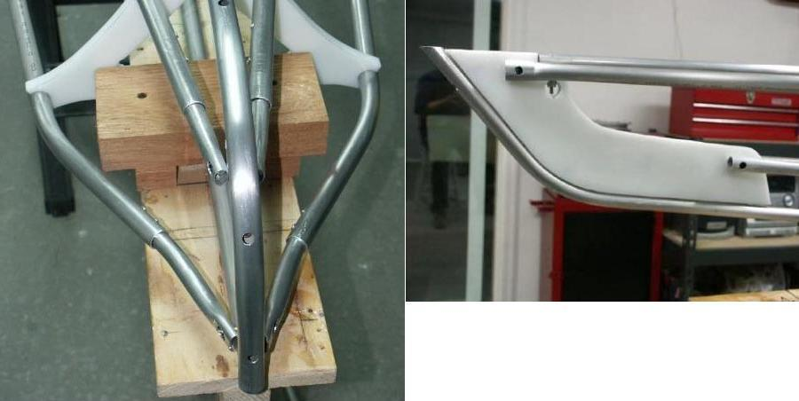

| Stem / Stern Plates (Alternative) 4 of 4 | Menu Previous Page Next Page |
|
 Tube Connections - It isn't necessary to use smaller diameter inserts (5/8") at the ends, nor is it necessary to flatten the tubes. The insert allows more control as the tubes slide to their final mounting location rather than having to precisely cut off the 3/4" stringer. The flattened surface is narrower than a round tube, making a cleaner PVC skin fit at the stems. Plus, flattening a small insert is easier than working with a 6ft stringer. The older method stem / stern above uses a combination of round / no insert tubes, insert tubes, and slightly crimped (vice only ) tubing. Note the way in which the tubes are connected by machine screws on the inside of the tube (Feathercraft method). This method makes it more difficult to attach or remove the tubes, but does allow the tubes to stay attached and lay flat for folding. Flattened tubes are removed for folding and are part of a newer assembly method. |
|